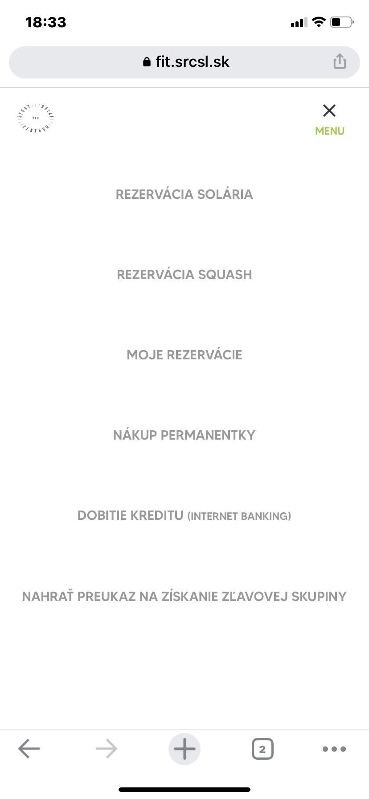
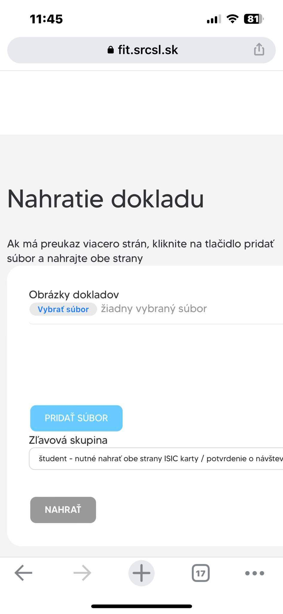

Ako sa zaradiť do zľavovej skupiny?
- prihlás sa do svojho účtu na fit.srcsl.sk
- v pravom menu klikni na kolónku NAHRAŤ PREUKAZ NA ZÍSKANIE ZĽAVOVEJ SKUPINY
- vyber zľavovú skupinu, do ktorej sa chceš zaradiť : študent / silové zložky (policajti a hasiči)
- nahraj potvrdenie o návšteve školy / ISIC z prednej a zadnej strany
- po nahratí si automaticky zaradený v zľavovej skupine
Doklady nahraté v zľavových skupinách kontrolujeme 1x týždenne. V prípade, že užívateľ do systému nahrá neplatné doklady, bude mu deaktivovaná permanentka bez možnosti vrátenia peňazí.
Študenti pozor! Doklady na získanie študentskej zľavy je nutné nahrať každý rok po 20.9. nanovo, s platnou ISIC kartou / dokladom o návšteve školy v danom školskom roku / semestri.

